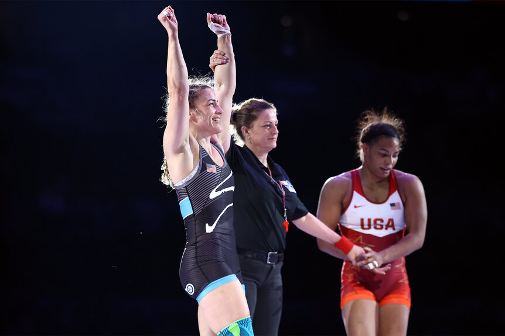

The begining
Women's wrestling in the USA has undergone a remarkable evolution since its inception. In recent years, women's wrestling has experienced exponential growth. The sport's popularity has been bolstered by the success of American women on the world stage, with athletes like Adeline Gray and Helen Maroulis winning multiple World and Olympic championships.
Today, women's wrestling in the USA stands as a testament to the perseverance and talent of its athletes, coaches, and advocates. From its humble beginnings to its current status as a rapidly growing sport with Olympic success, women's wrestling has carved out a significant place in the American sports landscape.
Most Significal Events
- 1972: Title IX legislation signed, prohibiting discrimination based on sex in educational programs
- 1987: First World Championships for women held in Lorenskog, Norway (USA not included)
- 1989: USA Wrestling sends its first Women's World Team to World Championships in Switzerland
- 1993: University of Minnesota-Morris creates the first varsity women's wrestling team at college level
- 1996: USA Wrestling hosts its first age-group national championships for women
- 1997: Girls division added to Junior National Championships in Fargo, N.D.
- 2018: 792 participants (16U and Junior Nationals combined)
- 2023: 1,605 participants (16U and Junior Nationals combined)
- 2024: 1,975 participants (1,137 in Junior division, 838 in 16U division)
- 2003: USA Wrestling establishes women's freestyle resident program at U.S. Olympic & Paralympic Training Center
- 2004: Women's wrestling makes Olympic debut; Patricia Miranda wins USA's first Olympic medal (bronze)
- 2006: Michaela Hutchison becomes first girl to win an all-boys state title in Alaska
- 2020: NCAA approves women's wrestling as an Emerging Sport across all divisions
- 2023: Nearly 50,000 girls competing in 43 states with officially sanctioned girls' high school championships
- From 2013 to 2023, girls freestyle participation at Fargo increased by 412%
- 2023: Unique female participants increased from 1,163 in 2022 to 1,602 in 2023
- 2024: A record 1,137 junior women competed, along with 838 in the 16U division
Collage Wrestling Recruting Guide